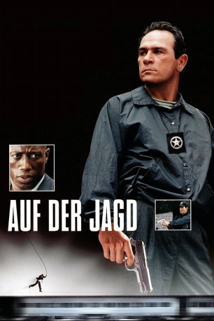
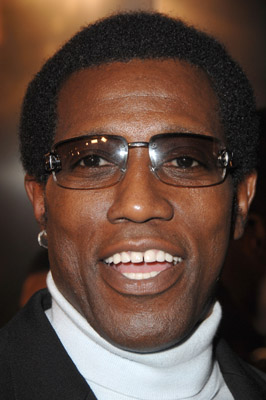
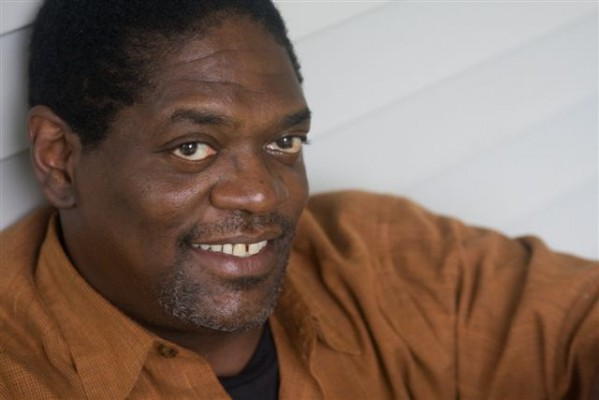
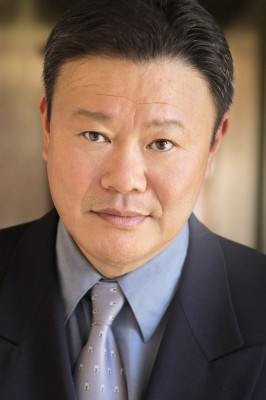
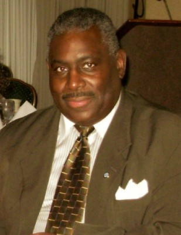
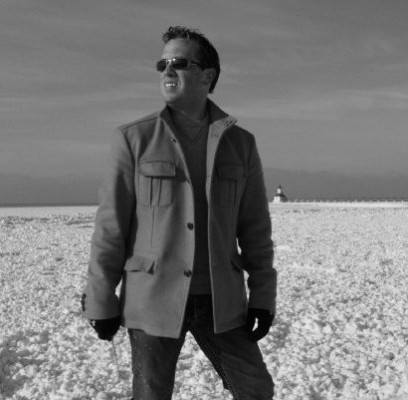

#1615 Auf der Jagd
Alternativ: U.S. Marshals
 
 IMDB-Wertung: 6.5 / 10
IMDB-Wertung: 6.5 / 10  Metascore: 47
Metascore: 47 
Der Ex-CIA-Agent Mark Roberts wird verdächtigt, zwei Morde begangen zu haben. Denn U.S. Marshal Sam Gerard hat dessen Fingerabdrücke am Tatort gefunden. Nach seiner Verhaftung soll Roberts nach New York geflogen werden. Doch die Maschine stürzt ab und dem vermeintlichen Mörder gelingt die Flucht. Gemeinsam mit dem Secret-Service-Agenten John Royce jagt Gerard den Häftling quer durch Amerika. Als der Marshal jedoch merkt, dass sein Partner versucht, Roberts zu beseitigen, beginnt er erneut zu recherchieren...
Jahr: 1998
Dauer: 131 Minuten
FSK: 12
Land: USA Studio: Warner Bros.Tonspuren:
Untertitel:
Auflösung: 720p (1280x720) Größe: 4659 MB
Genre: Action, Thriller, Krimi
Regisseur:  Stuart Baird
Stuart Baird
Drehbuch: Roy Huggins, John Pogue
Soundtrack: Jerry Goldsmith
Darsteller:
 Tommy Lee Jones als Chief Deputy Marshal Samuel Gerard
Tommy Lee Jones als Chief Deputy Marshal Samuel Gerard-  Wesley Snipes als Mark J. Sheridan / Warren / Roberts
 Robert Downey Jr. als Special Agent John Royce
Robert Downey Jr. als Special Agent John Royce Joe Pantoliano als Deputy Marshal Cosmo Renfro
Joe Pantoliano als Deputy Marshal Cosmo Renfro Daniel Roebuck als Deputy Marshal Bobby Biggs
Daniel Roebuck als Deputy Marshal Bobby Biggs- Tom Wood als Deputy Marshal Noah Newman
 LaTanya Richardson Jackson als Deputy Marshal Savannah Cooper
LaTanya Richardson Jackson als Deputy Marshal Savannah Cooper- Irène Jacob als Marie Bineaux
 Kate Nelligan als United States Marshal Catherine Walsh
Kate Nelligan als United States Marshal Catherine Walsh Patrick Malahide als DSS Director Bertrum Lamb
Patrick Malahide als DSS Director Bertrum Lamb Michael Paul Chan als Xian Chen
Michael Paul Chan als Xian Chen-  Johnny Lee Davenport als Deputy Marshal Henry
-  Donald Li als Detective Kim
- Marc Vann als Deputy Jackson
- Richard Lexsee als Fireman
- Vaitiare Hirshon als Stacia Vela
- Matt DeCaro als Deputy Stern
 Thomas Rosales Jr. als 727 Prisoner
Thomas Rosales Jr. als 727 Prisoner James Sie als Vincent Ling
James Sie als Vincent Ling Tracy Letts als Sheriff Poe
Tracy Letts als Sheriff Poe- Mark Morettini als Cop #1
- Ray Toler als Earl, Truck Driver Hostage
- Brenda Pickleman als Martha, Earl's Wife
 Norman Max Maxwell als Roadblock Trooper
Norman Max Maxwell als Roadblock Trooper- Peter Burns als State Trooper Captain
 Rose Abdoo als Donna
Rose Abdoo als Donna-  Lorenzo Clemons als Stark
- Meg Thalken als Saks Saleswoman
- Lennox Brown als Man in Green Cap
- Ammar Daraiseh als Drugstore Clerk
- Romanos Isaac als Ship's First Officer
- Rick Le Fevour als Deputy #10
- James Fierro als Deputy #6
- Michael Braun als 727 Co-Pilot
- Perry D. Sullivan als 727 Navigator
 Eddie J. Fernandez als Detective #1
Eddie J. Fernandez als Detective #1- Chick Bernhardt als Royce's Guide
- Tressana Alouane als Mike's Girlfriend
- Ed Cray als 727 Prisoner , uncredited
-  Reese Foster als Police Officer , uncredited
- Kevin Mukherji als Ship Foreman , uncredited
- Tony Rossi als Doorman , uncredited
- Bruce Spielbauer als Charity Ball Guest , uncredited
- Nick Stellate als Commuter , uncredited
- Rick Snyder als Special Agent Frank Barrows
- Michael Guido als Distracted Driver
- Robert Mohler als Young Cop
- Dado als Female Cop
- Karen Vaccaro als Hospital Cashier
- David Kersner als Desk Sergeant
Datei: X:\2-Dilogie(A-F)\Auf der Flucht - Jagd\Auf der Jagd (1998, FSK12, 1280x720).mkv seit 27.07.2015
Festplatte: HD Collection-2(A-Z)-3(A-M)
 Alle Filme aus Gruppe '2-Dilogie(A-F)\Auf der Flucht - Jagd'
Alle Filme aus Gruppe '2-Dilogie(A-F)\Auf der Flucht - Jagd'